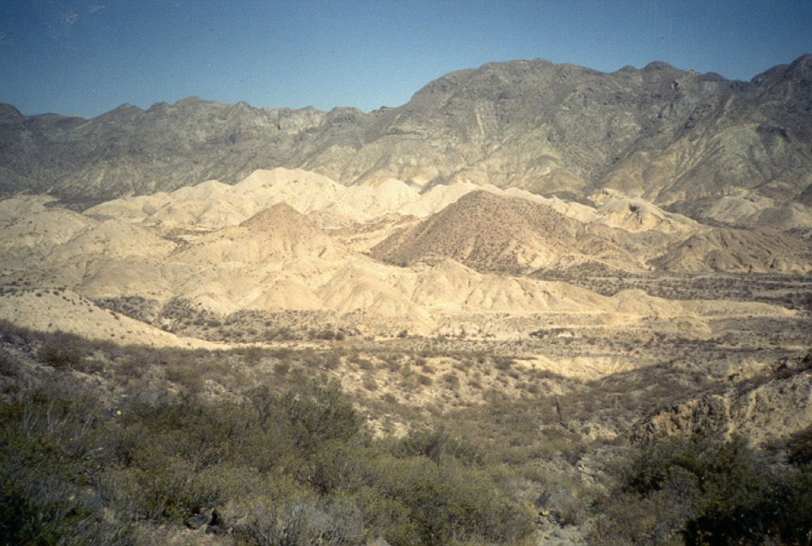
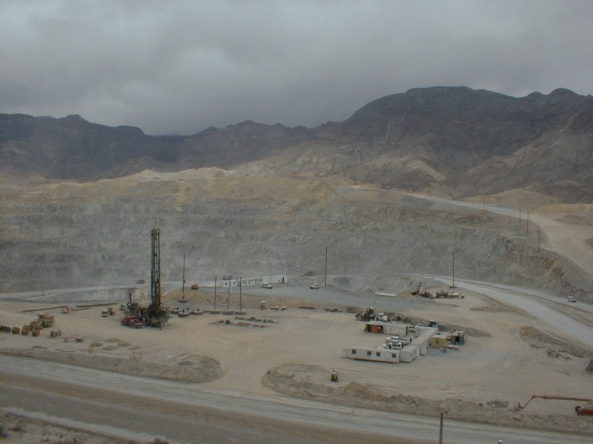
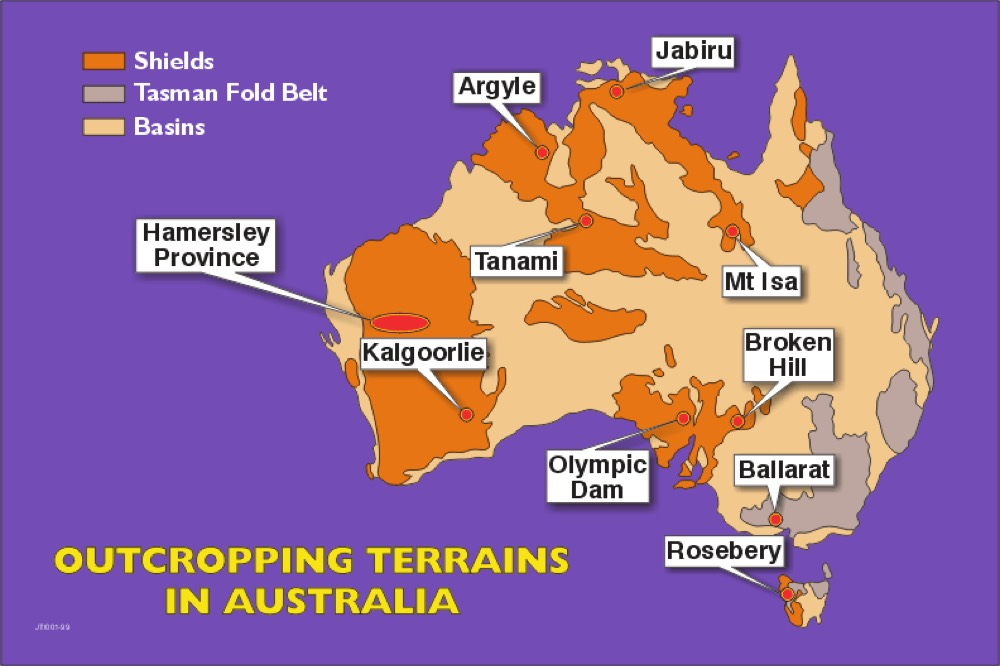

The big picture
This lecture throws a lot of vocabulary at you very quickly: syngenetic, epigenetic, hypogene, supergene, metallotect, mesothermal. Please don't memorise it as a list. Hold onto one sentence instead: an ore deposit is an unusually high concentration of elements that are normally spread thinly through the crust. That's also why deposits are hard to find. Every other idea in Lecture 1 answers one of three follow-up questions.
First, when does a concentration count as ore? That's an economic question, so you'll meet grade, tonnage, resources, reserves and even geopolitics. Second, how much does nature have to concentrate a metal? That's the concentration factor, and it explains why some deposits are common and others are rare. Third, what processes can do that concentrating? Tectonic setting, magma type and hydrothermal fluids. Those processes are the backbone of every deposit lecture for the rest of term, so time spent here pays off later.
One note on how this page works. It's laid out like a drill hole: the bar at the top shows how far down you are, and the games and checkpoints pay out in ounces of gold. Collect enough and you'll work your way from field assistant to chief geologist. Your progress is saved in this browser only.
Ore is an economic word, not a rock type
Here's the formal definition: ore is any naturally occurring material from which a mineral or aggregate of value can be extracted at a profit. Look hard at the last two words. A body of rock at 0.3 per cent copper can be ore at one copper price and waste at another, without a single atom in it changing. So a rock is never simply "ore". It's ore under a particular set of prices, costs, technology and rules. Don't take my word for it; move the sliders.
Cut-off grade: ore or waste?block model of a porphyry
Each block is 4 Mt. Cut-off = cost ÷ (price × 85% recovery). The margin ignores the capital cost of building the mine, which can run to billions. Block grades are made up for the game.
Notice what you just did: the rocks never changed, but the ore did. The same logic decides which minerals count as and which are . An ore mineral is the one you get paid for. Gangue comes out of the ground with it, and you pay to crush, process and dump it. Quartz, carbonates, chlorite, micas and pyrite are the usual gangue minerals. But "usual" doesn't mean "always".
At most sulphide deposits pyrite is a nuisance: worthless, acid-generating, and it dilutes your concentrate. At Mount Isa it has been treated as an ore mineral. Why? Phosphate Hill, roughly 150 km south, needs sulphuric acid to turn phosphate rock into fertiliser. Roast pyrite and you get sulphur dioxide, and from there sulphuric acid. Same mineral, same geology. The only thing that changed is that someone nearby will pay for it.
It also helps to split ore into three kinds, depending on whether you can actually see what you're mining. Bulk commodities like iron and manganese ore are basically the mineral itself, mined by the hundreds of millions of tonnes. Sulphide ores are metal-rich and visible: a galena-rich specimen might carry around 10 per cent lead. Invisible ores are most gold deposits, where grades are a few grams per tonne and you'll almost never see gold. The Witwatersrand conglomerates are the classic case: the largest gold accumulation known, and you can't see the gold. That's why mines run on-site labs for . After every blast the broken rock is sampled and assayed, because you can't tell ore from waste by eye and processing waste costs real money.
Over the last three to five years the industry has shifted. Price used to be the whole story. Now governments fund deposits that wouldn't stack up on price alone, because they want secure supply. Tungsten is a good example: it's essential for hardened projectiles, China dominates production and has restricted exports, so US defence money is now flowing into Australian tungsten. The flip side is Australian nickel, which has been squeezed by large, cheap laterite nickel production with on-site processing in Indonesia.
This is also why is a slightly misleading phrase. No mineral is critical in itself. A commodity becomes critical when a particular country depends on it and doesn't control the supply, which is why every country's list is different.
Concentration factors: how hard nature has to work
Every element has an average abundance in the continental crust. To make an ore deposit, some process has to collect that element from a huge volume of ordinary rock and pack it into a small volume at a grade worth mining. Divide the minimum economic grade by the crustal average and you get the . Think of it as a measure of how unlikely a deposit is.
Aluminium is already 8.2 per cent of the crust, so you only need to quadruple it to make bauxite, and intense tropical weathering does exactly that by leaching everything else away. Tin is only about 2 parts per million, but you need around half a per cent to mine it, so something has to concentrate it about 2500 times. That's why tin deposits are tied to a narrow set of processes (highly evolved, reduced granites and their fluids), while iron and aluminium deposits are comparatively easy to find.
| Metal | Crustal average | Economic grade | Factor |
|---|---|---|---|
| Aluminium | 8.2% | 30% | ~4× |
| Iron | 5.6% | 50% | ~9× |
| Nickel | 75 ppm | 1% | ~130× |
| Copper | 55 ppm | 1% | ~180× |
| Zinc | 70 ppm | 5% | ~700× |
| Platinum | 5 ppb | 5 g/t | ~1000× |
| Gold | 4 ppb | 5 g/t | ~1250× |
| Tin | 2 ppm | 0.5% | ~2500× |
Gold averages 4 ppb in the crust, and 5 g/t is a typical mining grade.
Here's the trick that makes all of this easy: 1 g/t is exactly 1 ppm, because a tonne is a million grams. Once that clicks, every row in the table is a one-line division.
Now a puzzle worth sitting with. Zinc needs a bigger factor than nickel, yet zinc deposits are far more common. How? The factor tells you how big the job is, not how often nature gets it done. Zinc is happily carried by warm, salty fluids that circulate through sedimentary basins all the time. Nickel sulphide ore mostly needs a sulphide liquid to separate from a very hot ultramafic magma, which is a much rarer event. So read the table as "how big is the job", then ask "which processes can do it, and how often do they happen?"
- Concentration factor = economic grade ÷ average crustal abundance.
- Copper: 1% is 10 000 ppm; crust about 55 ppm; so about 180 times.
Grade, tonnage, and what an assay actually is
Every deposit is described by two numbers: (how much ore) and (how much metal per tonne). Multiply them and you get contained metal, which is what the market actually cares about. The units depend on the commodity. Precious metals (gold, silver, the platinum group elements) go in grams per tonne. Base metals (copper, lead, zinc, tungsten) go in weight per cent. Oxide ores such as iron, manganese, uranium and rare earths are quoted as weight per cent of the oxide. Diamonds are carats per cubic metre, because there's so little gem in the rock (1 carat is 0.2 g). Play with the units until they feel natural.
Assay deskconvert and calculate
Loaded with Alumbrera's gold at about US$4500/oz. In situ value ignores every cost and recovery loss, so it's always far larger than any real profit.
Grade is an average, built one metre at a time
A reported grade is an average of drill assays. Standard practice in Australia is to cut the core in half, crush one half and send it for in one-metre intervals. You sample every metre the same way, whether or not you can see mineralisation in it. If you only sampled the bits that looked good, you'd bias the grade upwards and overstate the deposit. Grade is also an economic term, so waste has no grade at all.
Inside a deposit you'll hear about low, moderate, high and very high grade zones. In gold deposits the very top end is called grade, generally over 100 g/t, and epithermal or orogenic systems that average 2 g/t can have patches over 1000 g/t.
When you model a deposit, leave the bonanza intercepts out or cap them. They're real, but they're unpredictable, and a mine plan built around them will overstate what you actually recover. Industry calls the capping a . Quick gut check: is 2.5 g/t gold high or low grade? These days it's quite good. Some operations mine at 0.5 g/t or less.
Alumbrera is a porphyry copper-gold deposit in the Andes: 605 Mt at 0.54% Cu and 0.64 g/t Au. Turn that into contained metal:
Neither grade looks impressive on its own, but over 605 million tonnes it's world class. That's the porphyry business model: low grade, enormous tonnage, bulk open pit. It's also why majors like BHP and Rio Tinto mostly chase porphyries and iron ore. Now here's the site before anyone mined it. Can you see where the deposit is?
Spot the deposit · Alumbrera 1975click where you'd send a field crew

Hint: look at colour and plants, not shape.

19751999- Contained metal = tonnage × grade.
- 1 g/t = 1 ppm; 1% = 10 000 ppm; 1 troy ounce = 31.1 g.
- Precious metals in g/t, base metals in %, oxide ores as % of the oxide, diamonds in carats per m³ (1 carat = 0.2 g).
From drill hole to reserve: a ladder of confidence
Finding mineralisation in one hole doesn't give you a mine. A deposit has to climb a ladder of knowledge and confidence, and in Australia the words on each rung have legal meaning under the . The bottom rung is exploration results: assays from holes. Once you have enough holes to estimate tonnage and grade, you have a , and it comes in three levels. Inferred rests on widely spaced holes, so you're assuming the mineralisation continues between them; read company announcements with that in mind, because "inferred" can hide a lot of optimism. Indicated means the holes are close enough that continuity is reasonable. Measured means the data are dense enough that you know tonnage and grade with high confidence.
The jump to an is a different kind of step. A reserve is the part of a resource you've shown can be mined at a profit once you apply the : mining method, metallurgy, economics, marketing, legal, environmental, social and government. Indicated can become probable. Measured can become proved, or only probable if some factor is still uncertain. Inferred never converts directly. The best way to feel this is to run a drilling program.
Drill it out14 holes left
There's a copper body somewhere under this paddock. Click to drill. Spread your first holes out to find it, then infill to build confidence. When you're ready, run a feasibility study and see what survives as a reserve.
Two practical things to keep in mind. First, the gap between discovery and mining is typically 10 to 15 years, and the capital is eye-watering: a porphyry project on the Argentina and Chile border is spending billions on rail, power and accommodation before a single tonne is mined. Second, most discoveries now come from small and mid-sized companies that can't afford to build mines, so they sell or form a with a major. Once a mine is running, though, the margins can be huge. Rough numbers: iron ore selling at about US$100/t and costing about US$30/t to produce leaves around 70 per cent as margin.
- Inferred resources never convert directly to reserves.
- Indicated converts to probable; measured to proved or probable.
Timing, direction and depth: three questions to ask any ore
Most of the definitions in this lecture are really three questions you should ask every time you pick up a piece of ore.
When did it form? Syngenetic or epigenetic
ore formed at the same time as the rock around it, like a placer gravel or a massive sulphide layer that settled on the seafloor along with the sediment. ore arrived later. Any vein is epigenetic, because you need solid rock to crack before you can fill the crack. This matters when you explore: syngenetic ore follows stratigraphy, so you trace a favourable layer, while epigenetic ore follows the plumbing, so you trace structures. The shape words fit onto this too. Stratiform ore is a layer within the sediment, stratabound ore is confined to one unit but may have replaced it later, and discordant ore cuts across layering.
Which way was the water going? Hypogene or supergene
ore was deposited by fluids rising from depth. ore formed from water moving down during weathering, which leaches metals near the surface and redeposits them lower down. Supergene enrichment can make a deposit. The Endeavor mine at Cobar is a good example: supergene enrichment produced zones of native silver rich enough to change the economics. You'll go deep on this in Lecture 2.
Watch it formplay all four
How deep and how hot? Epithermal, mesothermal, hypothermal
These three words describe hydrothermal deposits by the depth and temperature they formed at. They come from Lindgren's classification about a century ago, and "epithermal" in particular is still used every day. Drag the probe down through the crust and watch what changes.
Thermometer probevisit all three zones
Minerals as thermometers · which zone?
The useful habit here is to treat minerals as thermometers. Chalcopyrite generally needs more than about 200 °C, so if a sample is full of it, think twice before calling it epithermal. If a vein is all galena, sphalerite and fine banded quartz, the shallow, cooler end is a better bet. Use the 200 °C line as a rule of thumb rather than a hard law; you'll lean on it constantly in the ore suite labs. slide 18 and recording
- Minerals are thermometers: abundant chalcopyrite generally means more than about 200 °C, so think twice before calling it epithermal.
- Galena, sphalerite and fine banded quartz or chalcedony with no chalcopyrite points to the cool, shallow epithermal zone.
- A vein that cuts bedding is epigenetic.
Tectonics is the first filter
Before you worry about a particular hill, ask whether you're even in the right kind of crust. Each deposit type needs a particular combination of heat, fluid, magma and stress, and plate tectonics sets that combination. So the first pass of exploration is simple to say: which setting does this deposit need, and where is that setting preserved? Test your instincts before I give you the answers.
Prospector0 / 5 first-try
Schematic and not to scale. The spreading centre stands in for the back-arc basins where most VMS forms; real back-arcs open up behind an arc, on the overriding plate.
Two words you'll hear constantly: and . Brownfield is near existing or historic mines, like Cobar. Greenfield is where nothing has been found before. Olympic Dam is the great greenfield story: the team was testing an idea about sediment-hosted copper and instead found a completely new style of deposit (iron oxide copper-gold, or IOCG) that turned out to be one of the largest in the world. The lesson for you: a good geological idea, tested properly, can beat a model that only looks for what's already known.
Australia's particular problem: cover
Australia hasn't been glaciated recently, so instead of fresh, scraped bedrock, most of the continent is blanketed by and transported sediment, in places more than 100 metres thick. By one industry estimate, around 99 per cent of Australian exploration holes stop shallower than 100 metres. Put those two facts together and you get a badly under-explored continent. Even long-settled country around Orange keeps producing new porphyry discoveries once people look in a different way.

Magma chemistry picks the metals
You met tholeiitic, calc-alkaline and alkaline series in second year as petrology. They come back here because each series carries a different set of metals. Know the magma type and you know which deposits are even possible.
Work it out from where each magma comes from. Tholeiitic magmas are the most mantle-like: basalts from ridges, young arcs and big mafic intrusions, low in potassium, around 53 per cent silica. Mantle melts carry chromium, nickel, platinum group elements, titanium and vanadium, and the main concentrating process is crystals or sulphide droplets physically separating from the melt. Think Bushveld chromitites and Sudbury nickel-copper sulphides. Hydrothermal overprinting matters much less here.
Calc-alkaline magmas form above subduction zones, from melting of the mantle wedge (fluxed by water from the slab) with varying amounts of crust mixed in. They're wet and oxidised, and when they crystallise in the upper crust they release large volumes of metal-bearing fluid. That's the recipe for porphyry copper-gold-molybdenum, skarns and many epithermal systems, where the hydrothermal stage does the real work.
Alkaline magmas (shoshonites, syenites, carbonatites, kimberlites, lamproites) come from small-degree melting deep in the mantle, in rifts, cratons and some arcs. Small melt fractions concentrate the incompatible elements, so these give you rare earths, phosphate, some iron oxide ores and, through kimberlites and lamproites, diamonds. So if you're after primary rare earths, don't bother with tholeiites or calc-alkaline rocks. Go find the alkaline ones. Now try sorting them yourself.
Magma sortertap a deposit, then tap its magma series
Tholeiitic
Calc-alkaline
Alkaline
Oxidised or reduced
One more split is worth knowing: oxidation state. Oxidised granitoids carry primary magnetite and tend to make porphyry copper-gold deposits, because sulphur stays as sulphate in the melt rather than locking copper and gold into early sulphides. Reduced granitoids (ilmenite instead of magnetite) are where tin and tungsten deposits form, and the most evolved ones make pegmatites with lithium, beryllium and fluorine. That means a quick magnetic susceptibility reading on a granite tells you something about which commodity it could be linked to. slide 42
- Tholeiitic: Cr, Ni, PGE, Ti, V (crystal and sulphide separation).
- Calc-alkaline: porphyry Cu-Au-Mo, skarns, many epithermal systems (hydrothermal stage).
- Alkaline: rare earths, phosphate, some iron oxide ores, diamonds (kimberlite, lamproite).
The hydrothermal chain: break one link and you get nothing
Most deposits you'll study this term are hydrothermal, at least in part, so you need a clear picture of what it takes to make one. Think of it as a chain: a metal source, a fluid that can carry metal, a pathway to focus it, a trap that makes it drop the metal, a seal to keep it there long enough, and preservation afterwards. Every link must hold. And add one blunt rule: every deposit is structurally controlled. Run the simulation, then switch links off and watch how each failure looks.
Hydrothermal system simulatorDeposit 0%
The trap is where most of the chemistry happens, and you'll keep coming back to it. Hydrothermal fluids are usually undersaturated in metals, meaning they're carrying less than they could. They only drop their load when something changes fast: the fluid cools, the pressure falls and it boils, it mixes with cooler groundwater, or it reacts with a rock (limestone is the classic) that neutralises its acidity. Each pass only leaves a little metal behind, so you need an enormous volume of fluid flowing through the same small volume of rock for a long time. That's the deeper reason focused structures and seals matter so much.
A cubic kilometre of quartz monzonite magma with 3 wt% water is said to release about 100 Mt of water once it rises to around 3.5 km, where water starts to exsolve. Check it yourself with second-year numbers:
You get about 80 Mt, the same order as 100 Mt. Porphyry intrusions are often tens of cubic kilometres, so the magma alone can supply billions of tonnes of hot, metal-bearing fluid.
Alteration: the bigger target
Wherever these fluids go, they react with the wall rock and change its minerals, texture and chemistry. That's , a form of . Here's why you should care: alteration halos are far larger than the ore itself, often by orders of magnitude, and they're what geophysical and geochemical surveys pick up first. Find the alteration, then follow it inward to the ore.
Where the water comes from
Magmatic water is only one source. Fluids can also be , seawater, or metamorphic, and real systems often mix several. Picture a continuum. At the hot end, metals separate directly from magma (chromite, Ni-Cu sulphides). In the middle, fluids exsolve from a cooling magma (pegmatites, porphyries). At the cool end, those fluids mix with meteoric water or seawater (epithermal, SEDEX, exhalative deposits). One system can run through the whole range as it cools.
Why classification is slippery, and why scale matters
Early classifications (Lindgren) sorted deposits by what you could observe. Later ones (Meyer, Guilbert and Park, Misra, Robb) became genetic, sorting by the process that formed them. Some names never went genetic: Carlin, Mississippi Valley type and Witwatersrand are still named after places, mostly because people still argue about how they formed.
Classification is hard because nature ignores our boxes. A magmatic system becomes hydrothermal as it cools. Buried sediments release fluids that alter and mineralise them. Deformation opens new pathways, and fluids reuse old weaknesses, so one area can be mineralised several times by unrelated events. My advice is to be a bit of a non-classifier: "porphyry" is useful shorthand, but every real deposit has its own character, and you shouldn't force it to match the textbook model.
The working model at De Beers held that economic diamonds only occur in kimberlite, and that meant the Argyle area wasn't followed up properly. Argyle turned out to be hosted by , and it became the world's largest diamond producer by volume and the main source of pink diamonds until it closed in 2020. Use a model as a tool for finding the next deposit. Treat it as a definition and you'll walk straight past the ones that don't fit.
Look at every scale
Look at a deposit at every scale you can, from metallogenic province down through district, mine, outcrop and microscope, because each scale answers a different question. Is the setting right? Where's the plumbing? What's the sequence of events? Can the ore minerals actually be processed? Kelian in Kalimantan is a cautionary tale: an epithermal gold deposit whose true nature (hosted by a ) wasn't fully understood until it had been mined out.
Three labels go with this. A is any feature that helped concentrate metals (a fault, a reactive unit, a particular intrusion). A metallogenic province is a region with a characteristic group of deposits. A metallogenic epoch is a favourable time window. The Ordovician Macquarie Arc in central NSW is both the place and the time for porphyry copper-gold in the state.
Self-test
Answer out loud or on paper before you open each one. If you got it, claim the ounces. Be honest; nobody's watching but you.
Glossary and flashcards
These are the terms this lecture assumes you already know, or only defines in passing. The dotted words in the text open them in place. Drill the deck until it's empty.
Flashcards
Where this goes next
The course runs from large-scale processes down to specific deposit types, and this lecture is the map. Here's where each idea comes back.
| Idea from Lecture 1 | Picked up in |
|---|---|
| Supergene processes, alteration halos | L2 Weathering, oxidation and alteration |
| Veins, stockworks, breccias, replacement | L3 Breccias, veins and ore textures |
| Ore vs gangue minerals | L4 Ore petrography, and every ore suite lab |
| "Every deposit is structurally controlled" | L5 Structural controls |
| Seafloor and syngenetic ore | L6 Ocean floor systems, L9 SEDEX, L10 VMS |
| Tholeiitic magmas, chromite, Ni-Cu-PGE | L7 and L8 Magmatic deposits |
| Oxidised calc-alkaline magmas, magmatic water | L11 Porphyry Cu-Au-Mo |
| Epithermal vs mesothermal, bonanza grades | L12 to L14 Gold deposits |
| Reduced granites, tin and tungsten | L15 Granite-related Sn-W-Mo |
| Alkaline magmas, REE, diamonds, critical minerals | L18 to L20 |
| Resources, reserves, economics | Mineral Economics lab, JORC material |
One practical point for assessment: the ore suites are worth 50 per cent, and they lean directly on this vocabulary. You'll be describing ore and gangue minerals, textures and likely setting. Your first ore suite page isn't marked, but it's where you get feedback, so take it seriously and redo it.